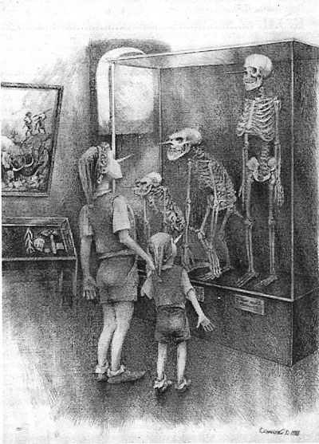

|
|
|
|
|
|
Б. Алмазов.
Штурм Зимнего. Вот что пишет Борис Алмазов в своей статье
«Загадки штурма Зимнего» (еженедедьник «Секретные материалы» № 12 (165)
за 2005 год): «Штурм Зимнего – такой же эффектный пропагандистский штамп, как и
залп «Авроры»…пушки которой, ударь они залпом, снесли бы всю Дворцовую
набережную». То есть с первого часа своего существования советская власть
напрочь отказалась от элементарного следования фактам. Если их не было, то они
тут же на ходу выдумывались. Ныне широко известный специалист по фашистской
пропаганде Геббельс – лишь мальчик в коротких штанишках, плохо выучивший
уроки истории. Как оказалось, никакого штурма Зимнего не было вообще. Был штурм винных подвалов – но это
уже на утро после падения Временного правительства. Это – исторический факт. А
вот всё остальное, чем нас долго пичкала советская историческая наука, это
ложь. Чего же я хочу? Прежде всего, чтобы современные историки громко бы
отреклись от «вынужденной лжи» своих учителей. А как иначе? Но мы этого не
наблюдаем. Всякие исторические круглые столы вежливо обходят молчанием эту
проблему. Вероятно, из-за корпоративной солидарности. Потому что многие из них
как раз и стали докторами на почве той самой советской исторической
лженауки. Хотя, разумеется, иных уж нет… Но оценка-то должна быть? Итак, вернёмся к событиям вокруг Зимнего дворца.
Никакой подготовки к его обороне фактически не было. Штабеля дров на площади не
были привезены сюда для создания баррикад – они здесь хранились для отопления.
И вовсе не помогали, а мешали защищать дворец. Да и кому было защищать? Женская
рота да немного юнкеров, которых не хватало даже для оцепления дворца по
периметру. А доблестные три сотни 14-го Донского полка, известные тем, что
подавили июльский антиправительственный мятеж, прихватив 2 орудия казачьей
батареи, смылись с места исторических событий. То есть, наконец-то заняли
нейтралитет в конфликте власти с её подданными. Видимо, им надоело выступать в
роли жандармов. Откуда же им было знать, что в исторической перспективе они
оказались не правы. Последовавшая за свержением буржуазного правительства
гражданская война отбросила страну в средневековье. А буржуи снова вернулись
спустя три четверти века. То есть самое глупое дело – прыгать через исторические
эпохи. Они же не из пальца высосаны недоучившимися студентами, а являются
объективной реальностью, прочно связанной с развитием производительных
сил общества и его политической
культуры. В это время революционный Балтийский флот в
составе около десятка кораблей выдвинулся к дворцу по Неве на ударные позиции. Зимний
был обречён, но взять его сходу тоже оказалось непросто хотя бы из-за размеров.
Да и не было у большевиков тех многочисленных толп, которые они потом показали
в пропагандистских фильмах. У них едва хватило двух с половиной тысяч матросов
для того, чтобы оцепить Зимний для предотвращения оказания помощи осаждённым.
Братцы-матросики стояли сплошной цепью, взявшись за руки, и никого не
пропускали даже мимо дворца. Как упоминал Джон Рид, была суббота и
питерский люд, вооружившись вениками, попёрся в бани. А в это время какие-то
кретины перегородили площадь матросней и не дают прохода. Тут поневоле
озвереешь. (Есть даже версия, что именно этот конфликт и был главным
содержанием событий в тот день. Как, например, весной того же года
случайный инцидент в женской очереди за хлебом привёл к полному краху
царизма). Никакого «залпа «Авроры» не было. Был всего
лишь единственный холостой выстрел из небольшого бакового орудия. Настоящий
обстрел вёлся из Петропавловской крепости – но абсолютно безграмотно. Во
дворец, стоявший напротив крепости, попало только 2 снаряда небольшого калибра.
Это был единственный случай использования Петропавловской крепости в военных
целях – да и то при стрельбе по своему же правительству! Такой абсурд не может
случиться даже в страшном сне. Опять не обошлось без казаков. Как выяснилось, «не
толпы пьяных солдат и накокаиненных матросиков» взяли Зимний, а спецотряд
из двухсот офицеров-егерей Северного фронта, находившихся в Фннляндии.
Указанным фронтом командовал донской казак генерал Черемисов –
большевик, прямо подчинявшийся Ленину. Указанная группа прибыла на
Финляндский вокзал специальным поездом и по Троицкому мосту без проблем
достигла казарм комендантской роты на Зимней канавке, где размещался госпиталь.
Затем оттуда они проникли во дворец через застеклённый переход и через открытый
вход Эрмитажного театра. Разведка заговорщиков, находившаяся с утра 25 октября
в здании дворца, помогла егерям пройти по лабиринтам дворца в комнату, где
находились министры Временного правительства. Егеря разоружили женский батальон
и юнкеров. Юнкерам позволили разбежаться. После чего «революционные трудящиеся»
без единого выстрела зашли в открытые настежь в центральные ворота со стороны
Дворцовой площади и Антонов-Овсеенко арестовал министров. Именно так
произошёл ВОЕННЫЙ ПЕРВОРОТ по свержению законного временного правительства.
А «революция трудящихся» началась на другое утро после исчезновения
егерей: тихо пришли – и тихо ушли. (Алмазов, учитывая их специальную
подготовку для ведения куда более сложных операций, назвал этот отряд
«спецназом». Но это была уже не революция, а самое обыкновенное мародёрство, о
чём советские историки стыдливо умалчивали на всём протяжении советской
власти). Картина была ужасной и трагикомической в одно и то же
время. Например, простой народ абсолютно не обращал внимания на бесценные
шедевры искусства Зимнего дворца. Брали только посуду, бельё, вырезали кожу из
кресел для пошива кожаных курток, входивших тогда в моду. К полудню наконец-то
у входов дворца поставили охрану, которая, однако, закрыла доступ только во
дворец. А в подвалах хранились большие запасы коллекционных вин. Их-то и
взяли штурмом «революционные трудящиеся» и примкнувшие к ним братцы-матросики и
солдаты. Именно в этом заключался штурм Зимнего дворца, о котором затем
слогались легенды… Если и были при этом жертвы, то только от перепития. Упившийся
народ лежал штабелями по Миллионной улице до Троицкого моста – и во многих
других местах. Только через несколько дней анархисты Центробалта прекратили
пиршество пулемётными очередями. А все коллекционные вина по указанию свыше
вылили в Неву. О случившемся военном перевороте город узнал с большим
опозданием, обывателям было не до каких-то там провокаций и пьяных драк на
Дворцовой, великий город жил своей жизнью. Как оказалось, за такое равнодушие к
реальным политическим событиям и горожанам, и всей стране очень скоро пришлось
заплатить очень высокую цену. Быть гражданином – это не пустой звук, а
прежде всего обязанность защищать свои гражданские права. Люди без
гражданского сознания – это просто бестолковое стадо, готовый материал для
всякого рода проходимцев и «великих вождей». Как только стало ясно, что власть
захватили большевики, в Петербурге с некоторым опозданием начались демонстрации
протеста, восстали юнкера. Уже 26 октября большевики расстреляли несколько
студенческих митингов и всех восставших юнкеров. Именно с этой гигантской
лжи и чудовищного беззакония началось победное шествие Антихриста по нашей
стране. Никакого настоящего штурма Зимнего не было – и слава Богу. Иначе от
него остались бы одни руины. (А что сделали с женским батальоном? Его отправили
в Белоостров, изнасиловав при этом троих доблестных дам). P.S. Мля… И тут казаки? В таком случае
- это одна из позорных страниц казачества. Если во второй мировой войне их
коллаборационизм был вполне объяснён большевистским геноцидом (прозрели после
Октября 1917?), то помощь Ленину была
явной ошибкой. Он же их потом вырезал вплоть до младенцев. Чего так и не сказал
Алмазов. И чего не мог в полной мере сказать Шолохов – хотя и создал
впечатляющую эпопею.  |
|
|
|